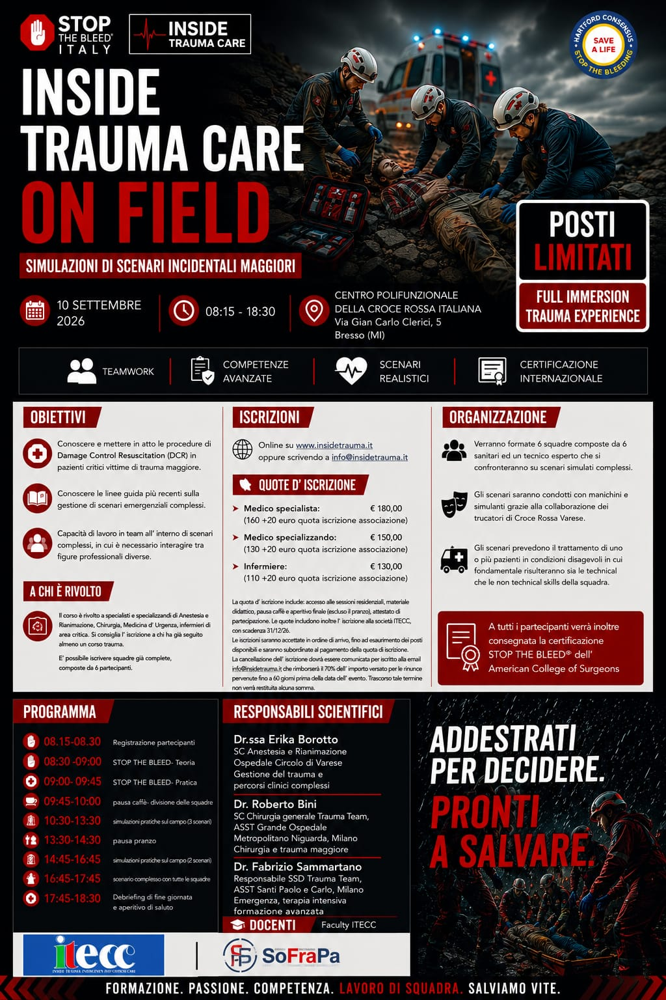
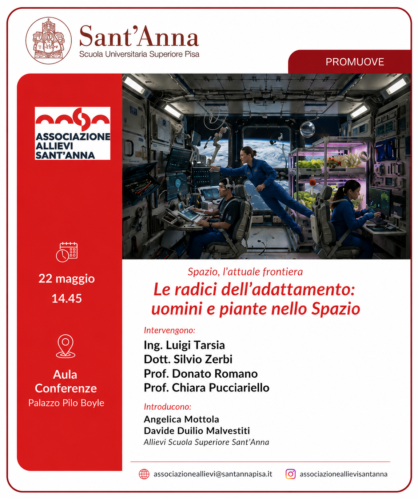
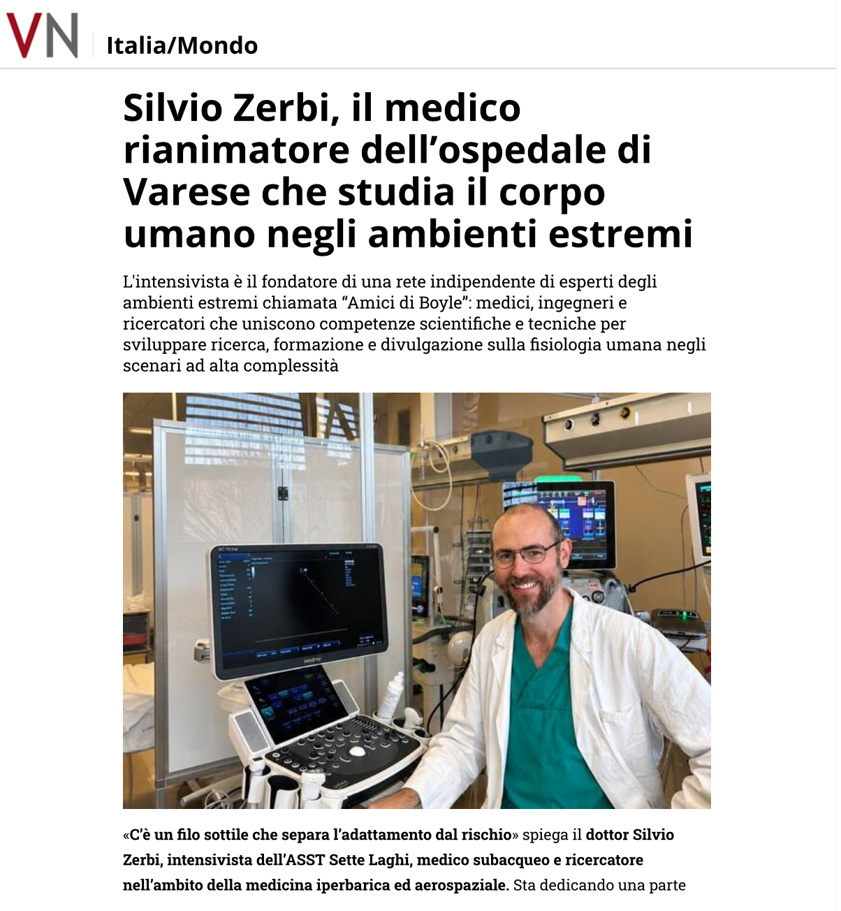
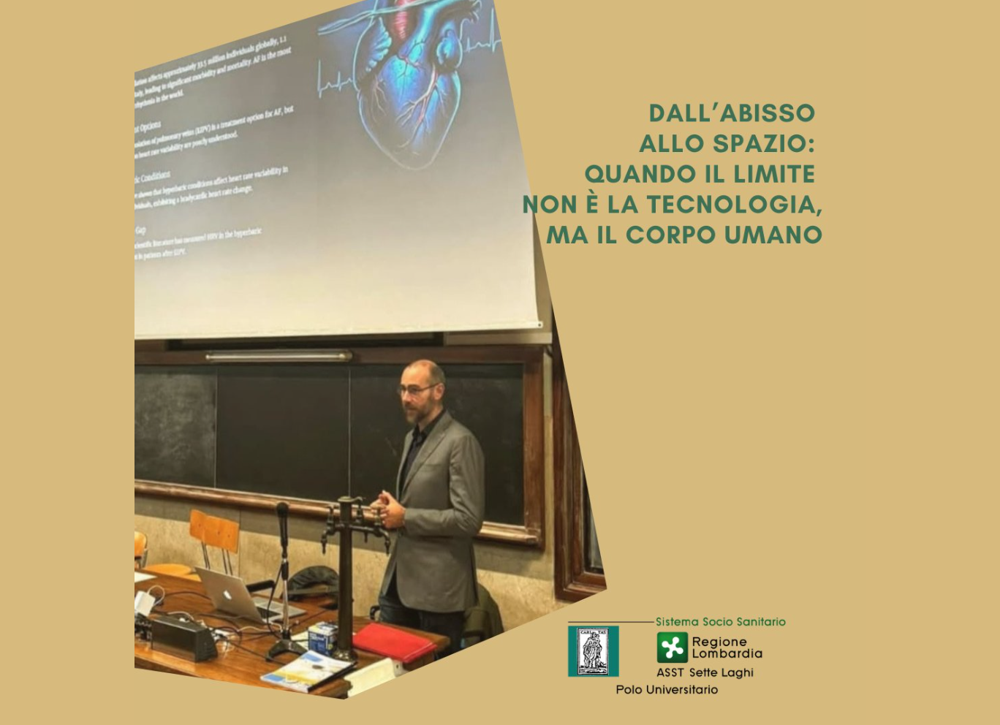
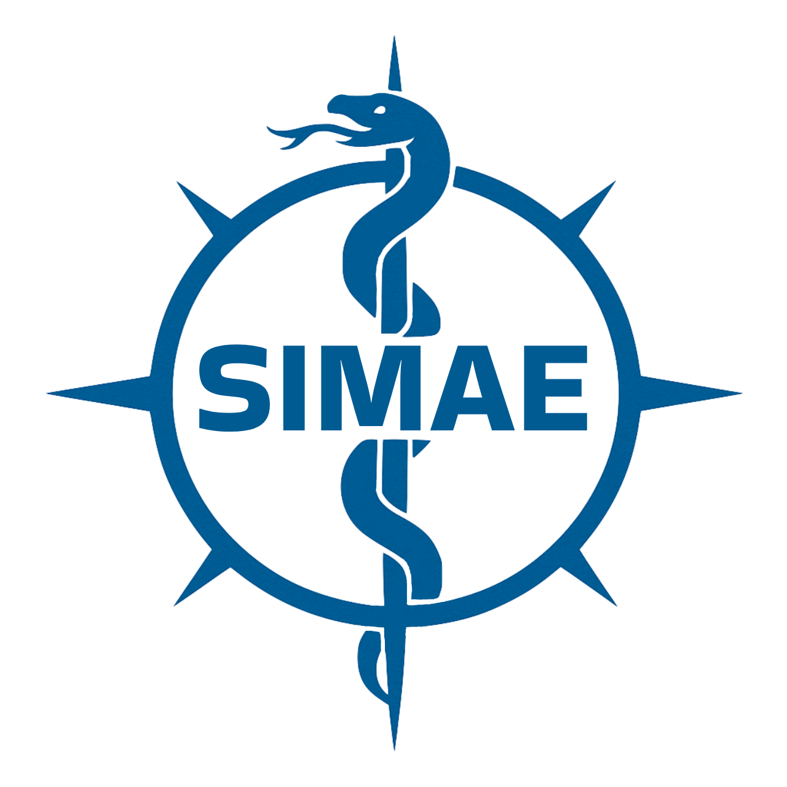

In evidenza
Network di professionisti di alto livello
Esperti in medicina subacquea e iperbarica, rianimazione, medicina spaziale e ambienti estremi con identità scientifica e visione operativa.
Ricerca, formazione e rete professionale nella medicina degli ambienti estremi. Una rete multidisciplinare che unisce clinica, fisiologia, tecnologia e cultura della sicurezza.
In evidenza
Esperti in medicina subacquea e iperbarica, rianimazione, medicina spaziale e ambienti estremi con identità scientifica e visione operativa.
Visione
Professionisti di prima linea che uniscono competenze mediche, ingegneristiche e scientifiche per sviluppare soluzioni operative in scenari ad alta complessità.
Contenuti
Materiali chiari, aggiornati, applicabili. Non solo teoria: corsi, risorse, pubblicazioni e occasioni concrete di collaborazione.
Visione
Essere un riferimento internazionale per innovazione e ricerca in medicina iperbarica e subacquea, con un approccio multidisciplinare che integra competenze mediche, tecnologiche e scientifiche di alto livello.
Amici di Boyle vuol dire ambienti estremi e gestione dell'emergenza negli scenari più complessi. Ricerca verificabile, metodi chiari e formazione continua, pensata per chi lavora sul campo.
Timeline
Aree di attività
Ricerca, formazione, pubblicazioni e media organizzati in un ecosistema coerente, leggibile e utile.

Macroarea 01
Studi clinici, collaborazioni scientifiche, progetti di ricerca e protocolli applicati alla medicina iperbarica e subacquea.
Esplora la ricerca
Macroarea 02
Docenze universitarie, corsi, congressi, materiali didattici e attività costruite per chi lavora sul campo.
Vai alla formazione
Macroarea 03
Articoli, case report, contributi editoriali e materiali scientifici utili a clinici, operatori e ricercatori.
Leggi le pubblicazioni
Macroarea 04
Podcast, interviste e contenuti divulgativi che rendono accessibile la medicina degli ambienti estremi.
Apri area mediaI Fondatori
Professionisti attivi nella medicina degli ambienti estremi, nella ricerca e nella formazione, con profili complementari e competenze operative.

Anestesista Rianimatore, Intensivista, Medico Subacqueo ed Iperbarico, Medico Aeronautico ed Aerospaziale.

Ingegnere Nucleare e Biomedico, Specialista in Medicina Subacquea e Iperbarica, Aeronautica ed Aerospaziale.

Anestesista Rianimatore, Intensivista, Medico Iperbarico e Subacqueo.

Anestesista Rianimatore, Medico Iperbarico e Subacqueo, Mass Gathering Expert. Gestisce il paziente critico in scenari operativi complessi, dall’emergenza territoriale agli ambienti estremi.

Ricercatore, Medico di Emergenza-Urgenza, PhD in Global Health, Humanitarian Aid and Disaster Medicine.
La Rete di Boyle
La Rete di Boyle unisce medici, ricercatori, ingegneri e operatori militari che lavorano dove l'aria finisce, la pressione sale e i margini di errore scompaiono. Professionisti selezionati, non collezionati.
Gli Amici di Boyle sono il futuro della medicina degli ambienti estremi: una comunità di studenti, operatori e appassionati, orientati all'eccellenza, pronti a imparare, contribuire e crescere insieme.
Profili, competenze e connessioni tra clinica, ricerca e ambienti estremi.
Eventi, idee, attività formative e contributi costruiti insieme alla rete.
Nuovi progetti editoriali, scientifici e formativi con taglio operativo.
Comitato Scientifico
Gli Amici di Boyle, insieme al Direttore Ingegneria Luigi Tarsia, sono membri del Comitato Scientifico del Polo Nazionale Droni (CSPND) — l'organismo che riunisce le eccellenze italiane di ricerca, industria e istituzioni nel settore dei sistemi aeromobili a pilotaggio remoto.
Il CSPND annovera tra i propri membri rappresentanti di ASI, Thales Alenia Space, Aeronautica Militare, Marina Militare e Confindustria. La presenza degli Amici di Boyle in questo contesto riflette il contributo della medicina degli ambienti estremi allo sviluppo di tecnologie avanzate per operazioni in scenari complessi — dalla sorveglianza aerea al supporto in emergenza, fino alle applicazioni in ambienti ostili.
Scopri il Comitato ScientificoContenuti
Materiali formativi e divulgativi raccolti in un archivio chiaro, consultabile e orientato alla pratica clinica e operativa.

Podcast
Pressione, immersione, fisiologia estrema e spazio in un formato divulgativo, chiaro e originale.
Ascolta il podcast
Corsi
HyperCare, SIMAE Bologna, Rescue in Difficult Environment: programmi formativi certificati per clinici e operatori.
Vai ai corsi
Lezioni
Attività didattiche elettive e materiali di docenza universitaria presso l’Università degli Studi dell’Insubria.
Apri le lezioni
Articoli
Pubblicazioni divulgative e contributi scientifici legati alla medicina subacquea, iperbarica e agli ambienti estremi.
Leggi gli articoliProssimo evento
Un corso del partner ITCC dedicato alla gestione del trauma maggiore oltre la fase acuta, in piena coerenza con una visione moderna della medicina degli ambienti estremi.
Entrare nella Rete di Boyle significa anche poter dare visibilità a eventi e iniziative di qualità, quando condividono rigore, utilità e valore formativo.
I siti partner possono pubblicare i propri eventi sia qui in home page che nella sezione eventi della Rete.

Scarica il programma completoRicerca
Dal razionale fisiologico alla pratica clinica e organizzativa, con strumenti pensati per chi lavora sul campo.
Hyperbaric · Metodi e protocolli
Indicazioni, sicurezza, qualità e razionale fisiologico tradotti in protocolli leggibili e applicabili, con taglio concreto e utilizzabile.
CollaboraAerospace · Ambienti estremi
Adattamenti fisiologici tra iperbarismo e microgravità: pressione, gas, performance e limiti operativi letti in una chiave davvero interdisciplinare.
PodcastHuman factors · Safety
Dalla rianimazione al soccorso avanzato: comunicazione, team-work, error management e strumenti utili per sistemi complessi.
CorsiLezioni e attività
Disponibili per lezioni e corsi presso università, aziende e associazioni interessate alle applicazioni della medicina iperbarica e subacquea.
Formazione
Un archivio formativo organizzato con criteri editoriali chiari: programmi completi, locandine leggibili e materiali pensati per clinici, operatori e subacquei.
Corsi
Portfolio di corsi, congressi e iniziative scientifiche nel campo della medicina degli ambienti estremi in cui i membri degli Amici di Boyle hanno portato il proprio contributo come relatori, docenti o esperti. Accesso diretto alle locandine e ai documenti ufficiali.



Docenze universitarie
Moduli didattici tenuti presso il Corso di Laurea in Medicina e Chirurgia dell'Università degli Studi dell'Insubria, con materiali scaricabili e accesso alle locandine degli eventi.
Lezione
Attività didattica elettiva e materiali di docenza universitaria presso l’Università degli Studi dell’Insubria.

Lezione
Docenza universitaria dedicata alla medicina spaziale e agli ambienti estremi, con approccio fisiologico e applicativo.
Articoli e pubblicazioni
Lavori peer-reviewed, case report e contributi divulgativi sulla medicina subacquea, iperbarica e degli ambienti estremi. Accesso diretto ai PDF.
Pubblicazione scientifica · Diving and Hyperbaric Medicine · Vol. 56 No. 2 · 2026
Zerbi S, Tarsia L, Benenati V, Nicosia D, Bosco G, Paganini M. Primo case report in letteratura di valutazione elettrofisiologica in vivo in un soggetto sottoposto ad iperbarismo (bagnato ed asciutto) dopo isolamento elettrico delle vene polmonari per fibrillazione atriale. Un lavoro che apre domande importanti per la ricerca futura: idoneità al diving dopo ablazione, comportamento dei dispositivi cardiaci impiantabili in iperbarismo e sviluppo di sistemi di monitoraggio in tempo reale. doi: 10.28920/dhm56.2.203-207
Leggi abstract e dati
Pubblicazione scientifica · SIAARTI Study Group
Studio multicentrico prospettico osservazionale sull’ossigenoterapia iperbarica in Italia. Contributo di Vincenzo Benenati e Dario Nicosia nel SIAARTI Study Group.
Apri PDF
Pubblicazione scientifica
Dott. Paganini, Head of Research degli Amici di Boyle, ha pubblicato come primo nome su una delle riviste di fisiologia più autorevoli al mondo, con un contributo originale sulla medicina degli ambienti estremi.
Apri PDF
Articolo divulgativo
«Dietro ogni missione umana negli ambienti estremi, esiste un processo molto più silenzioso e molto meno celebrato che ne definisce, minuto per minuto, la sostenibilità: la respirazione.»
Leggi l’articolo
Pubblicazioni
Un contributo divulgativo che mette in dialogo immersione subacquea, pressione, fisiologia e spazio.
Leggi l’articoloPubblicazione tecnica
Articolo tecnico sulla compatibilità dei dispositivi cardiaci impiantabili con l’attività subacquea ricreativa.
Apri PDFRassegna stampa
La ricerca e la visione degli Amici di Boyle raccontate da testate giornalistiche indipendenti.

VareseNews · Maggio 2026
L'intensivista è il fondatore di una rete indipendente di esperti degli ambienti estremi: medici, ingegneri e ricercatori che uniscono competenze per sviluppare ricerca, formazione e divulgazione sulla fisiologia umana negli scenari ad alta complessità.
Leggi l'articolo
ASST Sette Laghi
La fisiologia umana al centro della Space Blue Economy: il contributo del Dott. Silvio Zerbi riconosciuto dall'azienda ospedaliera universitaria di riferimento del territorio varesino.
Leggi l'articoloPartner
Realtà che condividono attenzione per formazione, trauma e ambienti estremi.
Progetto dedicato al trauma care, con approccio pratico, formazione e contenuti di qualità.
Visita il sito
SIMAE è la prima società scientifica in Italia ad occuparsi della ricerca e della formazione in tutti gli ambienti impervi: dal soccorso in mare, alle patologie d'alta quota fino alle spedizioni su tutti i continenti e nelle aree in cui ci si trova ad operare con scarse risorse.
Visita il sitoUniversità, società scientifiche, corsi, congressi, iniziative editoriali e partner operativi: uno spazio aperto a collaborazioni qualificate.
Contatti
Tre canali distinti per rispondere a esigenze diverse: collaborazioni generali, docenze e incontri, candidature alla Rete. Ogni richiesta arriva direttamente a chi di competenza.
Per domande, progetti, richieste editoriali o informazioni generali.
Email: [email protected]
Per università, corsi, congressi, attività didattiche e collaborazioni strutturate.
Hai un curriculum in medicina subacquea, iperbarica, aerospaziale o ambienti estremi? Presentati e valuteremo la tua candidatura alla Rete.
Candidati alla Rete